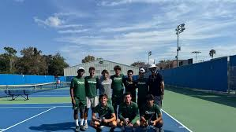
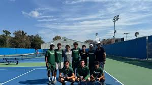

Tennis Tennis
About
Tennis is a dynamic and widely popular sport that can be played individually (singles) or in teams of two (doubles). It involves hitting a ball over a net with a racket, aiming to score points by landing the ball in the opponent's court in a way they cannot return. Known for its combination of physical agility, strategy, and precision, tennis is enjoyed recreationally and professionally worldwide. With iconic tournaments like Wimbledon, the US Open, and the French Open, it boasts a rich history and has produced legendary players who inspire millions.
Quick Facts
Famous Alumni
- Roger
- Alcarz
- Mule
Best Public Tennis Universities
- The University of Michigan
- University of North Carolina at Chapel Hill
- University of Virginia
- University of California, Berkeley
- University of California, Los Angeles
Gallery

 
